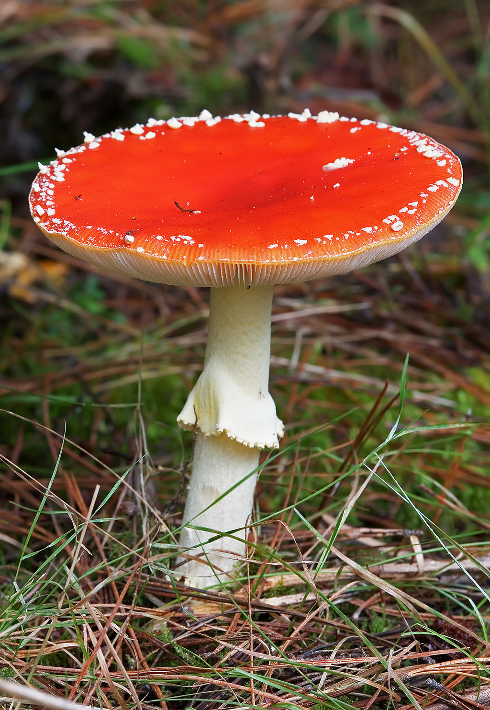
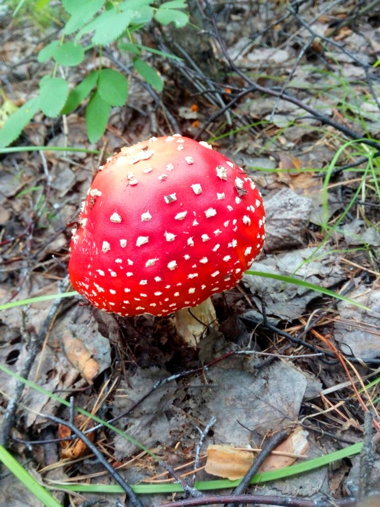

Toxicity
Amanita muscaria poisoning has occurred in young children and in people who ingested the mushrooms for a hallucinogenic experience. Occasionally it has been ingested in error, because immature button forms resemble puffballs. The white spots sometimes wash away during heavy rain and the mushrooms then may appear to be the edible A. caesarea. Amanita muscaria contains several biologically active agents, at least one of which, muscimol, is known to be psychoactive. Ibotenic acid, a neurotoxin, serves as a prodrug to muscimol, with a small amount likely converting to muscimol after ingestion. An active dose in adults is approximately 6 mg muscimol or 30 to 60 mg ibotenic acid; this is typically about the amount found in one cap of Amanita muscaria. The amount and ratio of chemical compounds per mushroom varies widely from region to region and season to season, which can further confuse the issue. Spring and summer mushrooms have been reported to contain up to 10 times more ibotenic acid and muscimol than autumn fruitings. Deaths from this fungus A. muscaria have been reported in historical journal articles and newspaper reports, but with modern medical treatment, fatal poisoning from ingesting this mushroom is extremely rare. Many books list Amanita muscaria as deadly, but according to David Arora, this is an error that implies the mushroom is far more toxic than it is. Furthermore, The North American Mycological Association has stated that there were "no reliably documented cases of death from toxins in these mushrooms in the past 100 years". The active constituents of this species are water-soluble, and boiling and then discarding the cooking water at least partly detoxifies A. muscaria. Drying may increase potency, as the process facilitates the conversion of ibotenic acid to the more potent muscimol. According to some sources, once detoxified, the mushroom becomes edible. Dr Patrick Harding describes the Sami custom of processing the fly agaric through reindeer.
Pharmacology
In 1968, R. Gordon Wasson proposed that A. muscaria was the soma talked about in the Rigveda of India, a claim which received widespread publicity and popular support at the time. He noted that descriptions of Soma omitted any description of roots, stems or seeds, which suggested a mushroom, and used the adjective hári "dazzling" or "flaming" which the author interprets as meaning red. One line described men urinating Soma; this recalled the practice of recycling urine in Siberia. Soma is mentioned as coming "from the mountains", which Wasson interpreted as the mushroom having been brought in with the Aryan migrants from the north. Indian scholars Santosh Kumar Dash and Sachinanda Padhy pointed out that both eating of mushrooms and drinking of urine were proscribed, using as a source the Manusmṛti. In 1971, Vedic scholar John Brough from Cambridge University rejected Wasson's theory and noted that the language was too vague to determine a description of Soma. In his 1976 survey, Hallucinogens and Culture, anthropologist Peter T. Furst evaluated the evidence for and against the identification of the fly agaric mushroom as the Vedic Soma, concluding cautiously in its favour. Kevin Feeney and Trent Austin compared the references in the Vedas with the filtering mechanisms in the preparation of Amanita muscaria and published findings supporting the proposal that fly-agaric mushrooms could be a likely candidate for the sacrament. Other proposed candidates include Psilocybe cubensis, Peganum harmala, and Ephedra.
Symptoms
Fly agarics are best known for the unpredictability of their effects. Depending on habitat and the amount ingested per body weight, effects can range from mild nausea and twitching to drowsiness, cholinergic crisis-like effects (low blood pressure, sweating and salivation), auditory and visual distortions, mood changes, euphoria, relaxation, ataxia, and loss of equilibrium (like with tetanus.) In cases of serious poisoning the mushroom causes delirium, somewhat similar in effect to anticholinergic poisoning (such as that caused by Datura stramonium), characterised by bouts of marked agitation with confusion, hallucinations, and irritability followed by periods of central nervous system depression. Seizures and coma may also occur in severe poisonings. Symptoms typically appear after around 30 to 90 minutes and peak within three hours, but certain effects can last for several days. In the majority of cases recovery is complete within 12 to 24 hours. The effect is highly variable between individuals, with similar doses potentially causing quite different reactions. Some people suffering intoxication have exhibited headaches up to ten hours afterwards. Retrograde amnesia and somnolence can result following recovery.
Treatment
Medical attention should be sought in cases of suspected poisoning. If the delay between ingestion and treatment is less than four hours, activated charcoal is given. Gastric lavage can be considered if the patient presents within one hour of ingestion. Inducing vomiting with syrup of ipecac is no longer recommended in any poisoning situation. There is no antidote, and supportive care is the mainstay of further treatment for intoxication. Though sometimes referred to as a deliriant and while muscarine was first isolated from A. muscaria and as such is its namesake, muscimol does not have action, either as an agonist or antagonist, at the muscarinic acetylcholine receptor site, and therefore atropine or physostigmine as an antidote is not recommended. If a patient is delirious or agitated, this can usually be treated by reassurance and, if necessary, physical restraints. A benzodiazepine such as diazepam or lorazepam can be used to control combativeness, agitation, muscular overactivity, and seizures. Only small doses should be used, as they may worsen the respiratory depressant effects of muscimol. Recurrent vomiting is rare, but if present may lead to fluid and electrolyte imbalances; intravenous rehydration or electrolyte replacement may be required. Serious cases may develop loss of consciousness or coma, and may need intubation and artificial ventilation. Hemodialysis can remove the toxins, although this intervention is generally considered unnecessary. With modern medical treatment the prognosis is typically good following supportive treatment.
Psychoactive Use
The wide range of psychoactive effects have been variously described as depressant, sedative-hypnotic, psychedelic, dissociative, or deliriant; paradoxical effects such as stimulation may occur however. Perceptual phenomena such as synesthesia, macropsia, and micropsia may occur; the latter two effects may occur either simultaneously or alternatingly, as part of Alice in Wonderland syndrome, collectively known as dysmetropsia, along with related distortions pelopsia and teleopsia. Some users report lucid dreaming under the influence of its hypnotic effects. Unlike Psilocybe cubensis, A. muscaria cannot be commercially cultivated, due to its mycorrhizal relationship with the roots of pine trees. However, following the outlawing of psilocybin mushrooms in the United Kingdom in 2006, the sale of the still legal A. muscaria began increasing. Professor Marija Gimbutienė, a renowned Lithuanian historian, reported to R. Gordon Wasson on the use of this mushroom in Lithuania. In remote areas of Lithuania, Amanita muscaria has been consumed at wedding feasts, in which mushrooms were mixed with vodka. The professor also reported that the Lithuanians used to export A. muscaria to the Sami in the Far North for use in shamanic rituals. The Lithuanian festivities are the only report that Wasson received of ingestion of fly agaric for religious use in Eastern Europe.

Siberia
Amanita muscaria was widely used as an entheogen by many of the indigenous peoples of Siberia. Its use was known among almost all of the Uralic-speaking peoples of western Siberia and the Paleosiberian-speaking peoples of the Russian Far East. There are only isolated reports of A. muscaria use among the Tungusic and Turkic peoples of central Siberia and it is believed that on the whole entheogenic use of A. muscaria was not practised by these peoples. In western Siberia, the use of A. muscaria was restricted to shamans, who used it as an alternative method of achieving a trance state. (Normally, Siberian shamans achieve trance by prolonged drumming and dancing.) In eastern Siberia, A. muscaria was used by both shamans and laypeople alike, and was used recreationally as well as religiously. In eastern Siberia, the shaman would take the mushrooms, and others would drink his urine. This urine, still containing psychoactive elements, may be more potent than the A. muscaria mushrooms with fewer negative effects such as sweating and twitching, suggesting that the initial user may act as a screening filter for other components in the mushroom. The Koryak of eastern Siberia have a story about the fly agaric (wapaq) which enabled Big Raven to carry a whale to its home. In the story, the deity Vahiyinin ("Existence") spat onto earth, and his spittle became the wapaq, and his saliva becomes the warts. After experiencing the power of the wapaq, Raven was so exhilarated that he told it to grow forever on earth so his children, the people, could learn from it. Among the Koryaks, one report said that the poor would consume the urine of the wealthy, who could afford to buy the mushrooms. It was reported that the local reindeer would often follow an individual intoxicated by the muscimol mushroom, and if said individual were to urinate in snow the reindeer would become similarly intoxicated and the Koryak people's would use the drunken state of the reindeer to more easily rope and hunt them.
Other Uses
The Finnish historian T. I. Itkonen mentions that A. muscaria was once used among the Sami people: sorcerers in Inari would consume fly agarics with seven spots. In 1979, Said Gholam Mochtar and Hartmut Geerken published an article in which they claimed to have discovered a tradition of medicinal and recreational use of this mushroom among a Parachi-speaking group in Afghanistan. There are also unconfirmed reports of religious use of A. muscaria among two Subarctic Native American tribes. Ojibwa ethnobotanist Keewaydinoquay Peschel reported its use among her people, where it was known as miskwedo (an abbreviation of the name oshtimisk wajashkwedo (= "red-top mushroom")). This information was enthusiastically received by Wasson, although evidence from other sources was lacking. There is also one account of a Euro-American who claims to have been initiated into traditional Tlicho use of Amanita muscaria. The flying reindeer of Santa Claus, who is called Joulupukki in Finland, could symbolize the use of A. muscaria by Sámi shamans.
Vikings
The notion that Vikings used A. muscaria to produce their berserker rages was first suggested by the Swedish professor Samuel Ödmann in 1784. Ödmann based his theories on reports about the use of fly agaric among Siberian shamans. The notion has become widespread since the 19th century, but no contemporary sources mention this use or anything similar in their description of berserkers. Muscimol is generally a mild relaxant, but it can create a range of different reactions within a group of people. It is possible that it could make a person angry, or cause them to be "very jolly or sad, jump about, dance, sing or give way to great fright". Comparative analysis of symptoms have, however, since shown Hyoscyamus niger to be a better fit to the state that characterises the berserker rage.